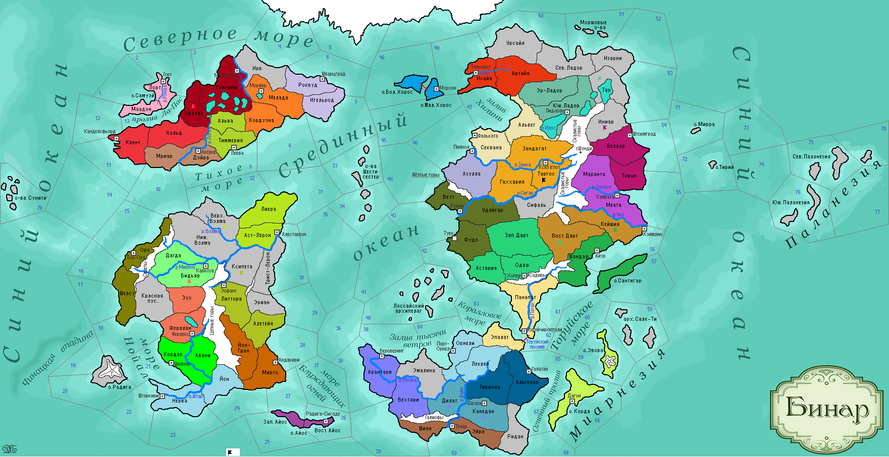

<==
| 1 |
| 2 |
| 3 |
| 4 |
| 5 |
| 6 |
| 7 |
| 8 |
| 9 |
==>

5-й ход истории мира Бинар (1120 г.)
· Князь Атуана Гед I испустил дух… Новым правителем стал его сын Маати. Войска вновь безуспешно атаковали леса Канедана.
· Эндрас I – новый верховный патриций Дюрандаля.
· Знахарство становится всё более популярней среди оделингов.
· Остров Айос становится местом рождения новой религии – радигизма.
· Войска Моэдаса одерживают верх над армией Темпеста в Канедане, но не смогли взять верх над защитой г.Джуры.
· Селетийцы вспомнили о старинных традициях матриархата.
· Рерцер II принимает власть в Форзерде.
· Йонтари становится феодальной монархией.
· У роккаров укрепляется традиция проведения пятничных публичных казней.
· Умирая, преподобный Зигманд призвал князя Вестервальда к войне против Одегона. Язычников решено привести к вере в Асатру. Войска вторгаются в провинцию Одэлла и захватывают её.
· Войска Ферлустана захватывают санктийскую провинцию Бидьяр.
· Во время траура дартийские женщины надевали на себя светонепроницаемые накидки и читали грустные стихи.